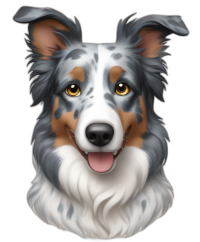
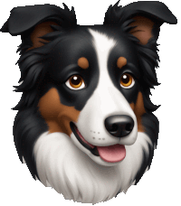
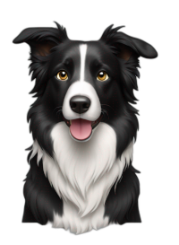

Tipos de Border Collie
Olá! Hoje vou apresentar a vocês os tipos mais comuns de Border Collie pelo mundo 🐕
Border Collie Blue Merle
O Blue Merle Border Collie destaca-se principalmente pela sua casaco espetacular, que combina tons de azul, preto e ocasionalmente branco. Este padrão manchado é o resultado de uma mutação genética e confere-lhe uma aparência única. Além disso, possuem olhos que podem ser azuis, castanhos ou até mesmo um de cada cor, o que agrega ainda mais à sua singularidade.

Border Collie Brown
O Border Collie marrom é um testemunho da beleza e diversidade encontradas no mundo canino. Sua combinação de vitalidade, inteligência e lealdade faz dele um amigo inestimável e um membro valioso de qualquer família.
Border Collie Tricolor
O Border Collie Tricolor é uma das variações mais impressionantes da raça. Sua pelagem combina três tons harmoniosos, geralmente preto, branco e marrom, criando um visual cativante que conquista tutores ao redor do mundo

Border Collie Black and White
Os Border Collies preto e branco são facilmente reconhecíveis e apreciados tanto por criadores quanto por donos de pets. A nitidez do contraste entre o preto e o branco proporciona uma estética visualmente atraente e é uma das razões pela qual essa coloração é tão prevalente

Para saber mais sobre esses cachorrinhos fofos, acesse no link abaixo ↓
Clique para saber mais